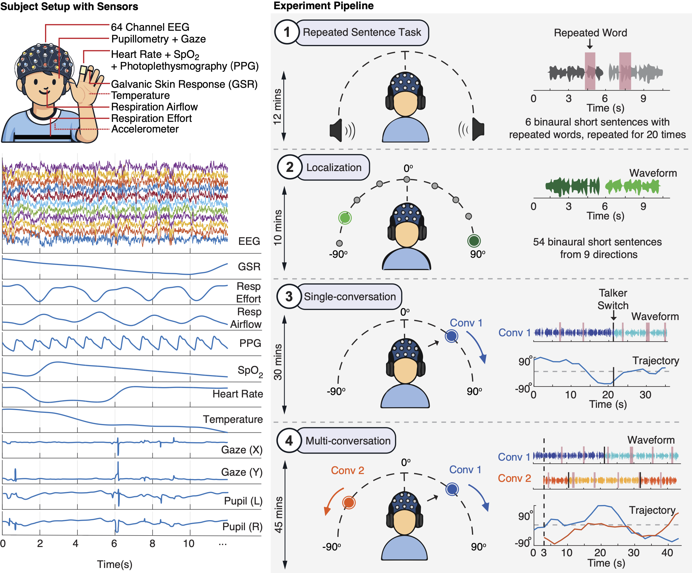

A Large-Scale Multimodal Dataset for Auditory Attention During Moving Conversations
Auditory attention decoding (AAD) is often evaluated on static, simplified speech scenes that poorly match everyday listening conditions. MOV-AAD addresses this gap by providing a large-scale dataset designed to study auditory attention under moving, naturalistic conversations. The dataset combines 64-channel EEG with synchronized physiological recordings, enabling analysis of cross-modal neural and physiological markers of attention and listening effort in ecologically valid listening scenarios.

This dataset can be used for:
64-ch EEG, Gaze location, Pupil dilation, Respiration, GSR, PPG, SpO₂, Temperature, Motion
Temporal alignment across all neural & physiological streams
Age 24 ± 4.5 years, verified normal hearing status
Massive continuous recording for robust AAD modeling
Repeated sentences, localization, single & multi-speaker conversations
Active repeated-word detection & precise localization reports
The dataset encompasses four distinct experimental tasks per participant, transition from structured sensory validation to ecologically valid, naturalistic listening scenarios:
1. Repeated Sentence Task: A baseline neural reliability check featuring shuffled short sentences repeated without background noise to evaluate within-subject response consistency.
2. Localization Task: A spatial perception task conducted prior to the main experiment to familiarize participants with spatial cues and assess their localization accuracy.
3. Single-Conversation Task: An active listening task where participants track naturalistic, continuous conversational narratives from a single dynamically moving sound source.
4. Multi-Conversation Task: A selective attention task requiring participants to attend to one target conversational stream while ignoring a competing co-spatial distractor.
| Task / Condition | Experimental Purpose | Stimuli & Speakers | Spatial Configuration | Background Noise | Total Stimuli / Duration | Available Modalities |
|---|---|---|---|---|---|---|
| Repeated Sentence Task | Split-half & odd-even reliability check for neural responses. | 6 short sentences (shuffled order); 3 male & 3 female talkers. | Diotic presentation (None) | None | 120 trials (~12 min) |
✓ EEG & Physio ✓ Behavioral |
| Localization Task | Familiarize spatial cues & assess baseline spatial perception. | Independent short sentences; Single talker per trial. | Static; 9 coordinates (-90° to +90° in 22.5° steps). | None | 54 sentences (Short segments) |
- No Neural ✓ Behavior Metrics |
| Single-Conversation Task | Track neural tracking of speech with dynamic spatial change. | Continuous dialogue context; Multi-turn talkers. | HRTF-based dynamic moving (-90° to +90°); RMS-matched. | Diotic pedestrian/babble noise (-9, -12 dB) | 40 trials (~30 min) |
✓ EEG & Physio ✓ Behavior & Audio |
| Multi-Conversation Task | Evaluate selective Auditory Attention Decoding (AAD). | Two parallel stories with continuous context & turn-taking. | Two independent HRTF sources moving dynamically within ±90°. | Diotic pedestrian/babble noise (-9, -12 dB) | 56 trials (~45 min) |
✓ EEG & Physio ✓ Behavior & Audio |
All signals were synchronously recorded and streamed through g.tec HIamp and Simulink GUI at 1200 Hz, applied with 60 Hz notch filter:
| Modality | Specification | Description |
|---|---|---|
| EEG | 64 channels, 1200 Hz | High-density neural recordings (g.tec g.HIamp) |
| Pupil Dilation | Binocular, 60 Hz (Unified to 1200 Hz) | Pupil diameter measurements (Tobii Pro Nano) |
| Gaze Location | X and Y axes, 60 Hz (Unified to 1200 Hz) | Screen-coordinate gaze tracking mapped to screen size (Tobii Pro Nano) |
| Respiration Flow | 1200 Hz | Nasal airflow monitoring |
| Respiration Effort | 1200 Hz | Thoracic expansion belt tracking |
| GSR | 1200 Hz | Galvanic skin response |
| PPG | 1200 Hz | Photoplethysmography raw optical signal |
| Heart Rate | 1200 Hz | Derived beat-by-beat heart rate from PPG |
| SpO₂ | 1200 Hz | Peripheral oxygen saturation |
| Temperature | 1200 Hz | Skin temperature |
| Accelerometer | Triaxial, 1200 Hz | Head motion tracking |
The final dataset structure will be finalized and documented here upon release.
MOV-AAD/
├── participants/
│ ├── sub-001/
│ │ ├── eeg/
│ │ ├── physio/
│ │ ├── behavioral/
│ │ └── stimuli/
│ ├── sub-002/
│ └── ...sub-050/
├── stimuli/
├── preprocessing_scripts/
├── README.md
└── dataset_info.jsonDownload the complete dataset from Zenodo:
Download from Zenodo (Available Upon Publication)DOI: [Will be added upon publication]
Dataset will be released upon paper acceptance
Download using wget or curl (available after publication):
# Using wget
wget [ZENODO_URL]
# Using curl
curl -O [ZENODO_URL]
# Extract
unzip MOV-AAD-dataset.zipExample code for loading the dataset:
# Example loading code will be provided
# upon dataset release with full documentationWe provide baseline results using standard decoding approaches to facilitate comparison with future work. All analyses use leave-one-trial-out cross-validation.
If you use the MOV-AAD dataset or baseline models in your research, please cite our paper:
@article{mov_aad_2026,
title={MOV-AAD: A Large-Scale Multimodal Dataset for Auditory Attention During Moving Conversations},
author={LastName, FirstName and Collaborator, Gavin and JointAuthor, Author},
journal={arXiv preprint arXiv:XXXX.XXXXX},
year={2026}
}